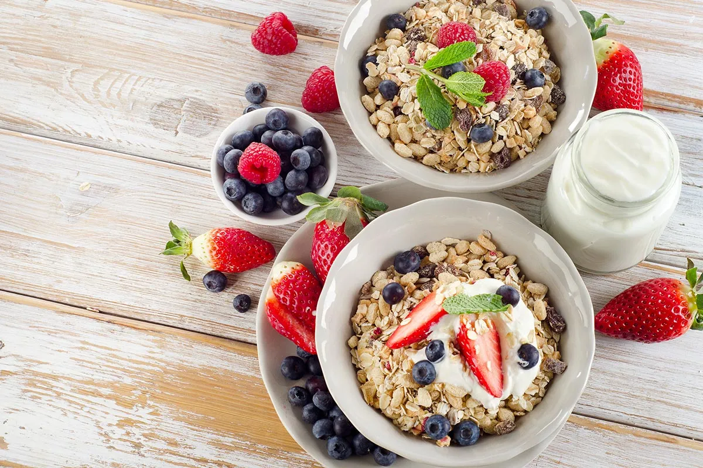
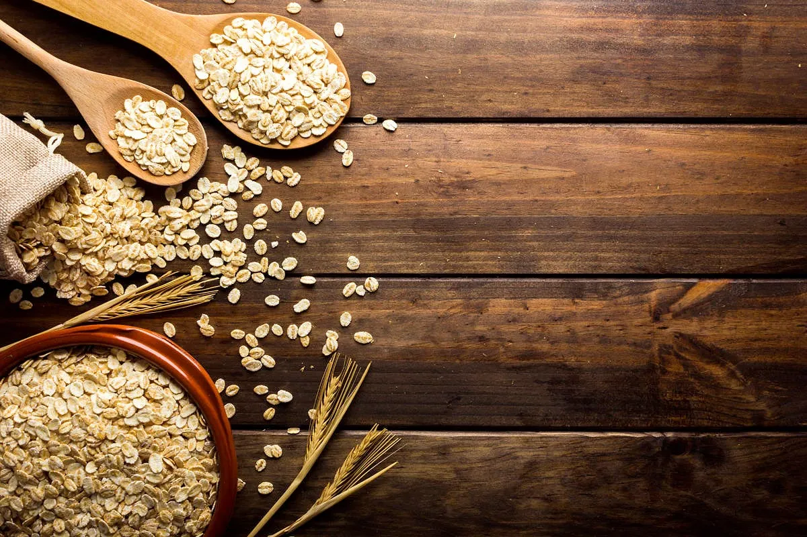

При этом больше всего полезных для организма свойств имеет цельнозерновая овсяная каша, требующая полноценной варки — тогда как овсянка быстрого приготовления чаще всего содержит добавочный сахар. Полная информация о составе и калорийность — в материале ниже.
Овсянка — в чем польза?
 Ключевой плюс овсянки заключается в содержании бета-глюкана — на него приходится до 2-8% от сухого веса крупы. Хотя бета-глюкан не переваривается в желудке человека, он несет ряд полезных свойств — являясь видом растворимой клетчатки.Прежде всего, бета-глюкан замедляет усвоение прочих углеводов овсянки, понижая уровень глюкозы в крови и формируя продолжительное насыщение¹. В желудке он превращается в густой гель, служащий питанием для полезной микрофлоры кишечника — то есть, является пребиотиком.
Кроме этого, в состав овсяной каши входят ряд витаминов и минералов — марганец, фосфор, магний, медь, цинк, железо и другие. Однако речь идет исключительно об овсяной крупе крупного помола — овсянку быстрого приготовления правильнее считать сладким десертом.
Плюсы и минусы, польза и вред
 Исследования говорят о том, что содержащийся в овсянке бета-глюкан замедляет появление чувства голода. В конечном итоге, овсяная каша полезна для нормализации уровня сахара в крови, снижения плохого холестерина, улучшения механики работы кишечника и состояния его микрофлоры.Что касается содержания витаминов и минералов, то наиболее важную роль играют электролиты — они положительно влияют на процессы обмена энергии в организме. Плюс, в составе овсянки много цинка и железа — эти минералы нужны мужчинам для выработки тестостерона.